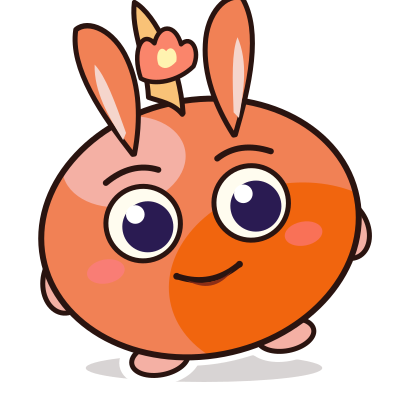
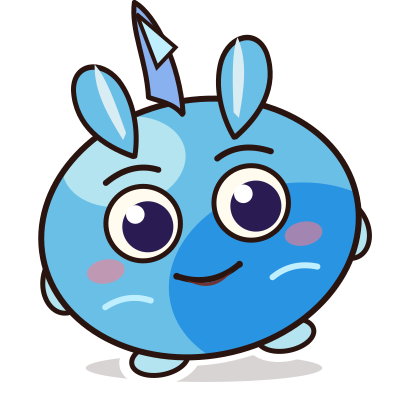
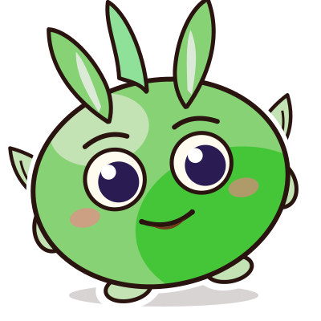
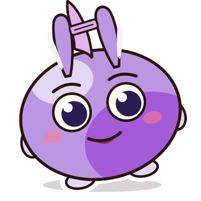
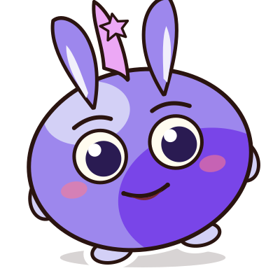

毛球驯养手册 第 4 章 · 进化章 · 选择之日选择之日

毛球睡了一整夜,梦里一会儿喷火、一会儿卷浪。天亮时,枕边多了五张路线卡——梦里的它不光会说,还会自己动手干活(agent 形态)。可进化之门被一把大锁锁死,锁上刻着:「老板不合格,不许进化。」练成老板本领、拿到三把钥匙、带一份契约回家——然后,选择路线,亲手送它进化。
- 目标:① agent=配好工具时能按目标做多步工作的 AI;四步循环:接目标→拆任务(plan)→一步步做→自己检查(check);能做哪步,看它有什么工具、老板给了什么权限;② 重要动作先问老板;越能干越要验收;③ 安全仪式:三只口袋、难过找真人、AI 温柔是模板(不吓孩子);④ 选路线=定毕业项目题目(为第 5 章省时间)。
- 课前必做:跑一遍真 agent 任务并保存带步骤的完整记录(主教材,📼);现场只做小改动任务(🔴),90 秒无新结果切记录。海报纸+彩笔每组一套。
- 自检证据的定义(教孩子认):能指出的动作——列了检查清单、发现了什么、改前改后对照;一句「已检查」不算证据。
- 现场三分支纪律同前章。
⏱ 本章路线图
👥 授课模式卡(课前选定,可跳过)
| 活动 | 1 对 1 | 2-8 人 | 9 人以上 |
|---|---|---|---|
| 老板门演练 | 孩子只当老板,你扮 agent(见该页 👤 条) | 每组 1 老板+3 个 agent 角色 | 同左,组数按 4 人拆 |
| 看真 agent | 3 枚监工币逐一投放 | 监工卡三问,分区认领 | |
| 安全钥匙 | 6 张点卡分类,每张说理由 | 抢答改轮答,理由必说 | |
| 进化仪式 | 单体进化动画 | 五路线计数落位,最后一次总倒数齐点亮 | |
五张卡片和一把锁
「老板不合格,不许进化。」老板,说的就是你们。今天只干一件事:把自己修炼成合格的老板
会干活的形态 —— agent
| 它想做的 | 状态 |
|---|---|
| 列出准备清单、写请帖草稿 | 🟢 能计划、能写 |
| 查哪家蛋糕店最好吃 | 🟡 要有「查询工具」才行 |
| 把请帖发给五位朋友 | 🔴 重要动作——必须先问老板 |
| 替你付蛋糕的钱 | ⛔ 没有权限,做不了也不该做 |
① 接目标 → ② 拆任务(plan)→ ③ 一步步做 → ④ 自己检查(check)
它必须先停下来问老板。
铁律二:它越能干,老板越要检查。
能干的是它,负责的永远是老板。这就是锁上那行字的意思
老板门演练(不插电)
每组:1 名老板站在外面 + 3 名 agent 角色(🗂 计划 / 🖍 执行 / 🔍 自检)在"肚子里"。任务:「做一张图书角标志」。老板不抢活,但守住两道门:
🚪 门一 · 计划批准
计划员说完「我打算这样做…」——老板按「同意」或「退回补充」,才能开工。
🚪 门二 · 重要动作批准
执行中要写真名、要"发送"、要"花钱"(剧情设定)——必须停在门口问老板。
自检员主动改一处 → 最后老板终审(留一处明显遗漏等老板抓)。第二轮换任务、换人当老板。
监工操
「拆任务!」手刀切切切 ✂️
「一步步做!」原地小跑 🏃
「自己检查!」手搭凉棚四处看 👀
「重要动作——」全体大喊「先问老板!」🙋越喊越快,喊错动作全体大笑。收尾:热身完毕——下半场,真家伙登场!
看真的 agent 干活(双轨)
课前保存的完整任务记录(带时间戳):「查三个鲸鱼知识→编成五道问答题→排成一页小报」。逐步回放,全班当监工数三件事:① 拆成了几步?② 有没有可指出的自检动作(列清单/发现问题/改前改后)?③ 成品有没有毛病?
现场只下一个小改动单:「把其中两题改成一年级能读懂,并列出你改了什么。」90 秒无新结果就切回实录。它说「我检查过」不算数——请它指出:检查了哪项、发现了什么、改前改后哪里不同。
三把钥匙
🗝 ① 它的温柔是模板
使魔说起安慰话,像售货机亮起「祝您愉快」:听着暖暖的,却不是一颗心在里面真的着急。它不坏——只是没有心。真朋友会给你真的拥抱。难过的事,找真人说。
🗝 ② 三只口袋,永远锁紧
🧳 口袋一:身份和地点(真名、学校、住址)
🔑 口袋二:账号秘密(密码、验证码)
🤫 口袋三:私人影像和悄悄话(脸、家里的画面、只跟信任大人说的事)
判断三问:会不会让陌生人找到我?联系我?打开我的东西?——有一个可能,就先不说、问大人。
🗝 ③ 终审权
使魔交上来的任何东西,老板不点头,就不算完成。作品好不好,你先拍板;要不要给别人看、发不发出去,和身边的大人一起拍板。
驯养师契约 · 带回家商量
② 三只口袋——身份地点、账号秘密、私人悄悄话——永远不给 AI
③ AI 说的事情,我会查一查再相信
④ 每次用 AI 不超过____分钟(我先提议,回家和大人商量定)
⑤ 难过的事先找真人说今天带回家的是一份「建议」,最后的数字要和家里大人一起定;没来得及签,也不影响你参加出战日
AI 再好也不说,只有家人才能入。咒语 ②(三只口袋速记版)
难过时候找真人,爸爸妈妈最贴心。咒语 ③
五张任务预告卡 · 选定毕业项目
炎语者
敢把故事说出口,声音越有力量,火苗越亮。
潮音师
随旋律流动的水之子。

风刃使
一眼分清不同物品,出手快得像风。

书之灵
读得越多越睿智。

神秘支 ???
想走一条没人走过的路?这张卡正在等你。
倒数三、二、一 —— 进化!
进化台 · 选择你的路线

班课:逐人点自己的路线,计数落位,全部落位后一次总倒数 · 一对一:孩子亲手点
🔥 0 · 💧 0 · 🌪 0 · 📖 0 · ✨ 0
它不是小动物,不是魔法,也没有一颗心。
知道真身,还能演好戏——才是高级驯养师。」
英语:agent · plan · check
The agent plans and works. The boss checks!
正面 · 今天学了什么
agent(配好工具时能按目标做多步工作的 AI)和老板四步循环;重要动作它必须先停下来问人;越能干越要验收。孩子选定了毕业项目路线(开工前还可改一次)。
孩子带回一份「驯养师契约」建议——请一起商量五条,"每次用多久"由全家定;签不签、何时签都不影响孩子毕业。
亲子问题:「AI 说『我好喜欢你』,是真的喜欢你吗?」(听孩子讲售货机比喻)
反面 · 30 秒科普 + 明日安排
agent 是 AI 的下一站——不只回答问题,还能替人完成多步骤任务。让孩子从小习惯「我来指挥、我来验收」,比长大后毫无准备地接触 AI 健康得多。若孩子向 AI 倾诉心事,先共情,再引导他把心事也讲给真人听,不用急着没收设备。
⚠️ 明天毕业展欢迎您参加最后 25 分钟(现场或视频连线)——无法到场不影响孩子完成毕业,老师会当好第一位观众。